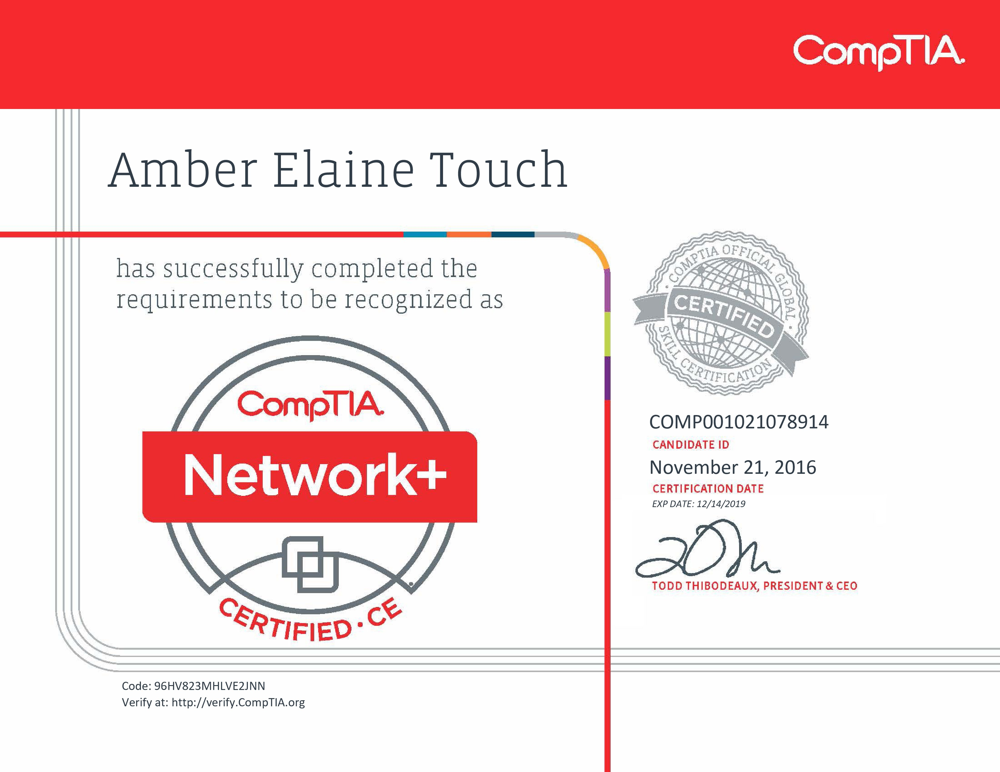

The AWS Certified Solutions Architect - Associate examination is intended for individuals who perform a solutions architect role and have one or more years of hands-on experience designing available, cost-efficient, fault-tolerant, and scalable distributed systems on AWS.
- Effectively demonstrate knowledge of how to architect and deploy secure and robust applications on AWS technologies
- Define a solution using architectural design principles based on customer requirements
- Provide implementation guidance based on best practices to the organization throughout the life cycle of the project
- Knowledge of recommended best practices for building secure and reliable applications on the AWS platform
- An understanding of security features and tools that AWS provides and how they relate to traditional services
- An understanding of network technologies as they relate to AWS
- An understanding of the AWS global infrastructure
- An understanding of security features and tools that AWS provides and how they relate to traditional services
To recieve the Linux Essentials Certificate, the candidate must:
- have an understanding of the Linux and open source industry and knowledge of the most popular open source Applications;
- understand the major components of the Linux operating system, and have the technical proficiency to work on the Linux command line; and
- have a basic understanding of security and administration related topics such as user/group management, working on the command line, and permissions.
Security+ incorporates best practices in hands-on trouble-shooting to ensure security professionals have practical security problem-solving skills. Skills tested include:
- Detect various types of compromise and have an understanding of penetration testing and vulnerability scanning concepts
- Install and configure identity and access services, as well as management controls
- Install, configure, and deploy network components while assessing and troubleshooting issues to support organizational security
- Implement and summarize risk management best practices and the business impact
- Implement secure network architecture concepts and systems design
- Install and configure wireless security settings and implement public key infrastructure
An IT operations specialist manages the flow of a workplace and optimizes day-to-day activities. In this role, an IT professional will analyze business operations and identify customer needs. Prerequisite certifications include:
- CompTIA A+
- CompTIA Network+
As a secure infrastructure specialist, an IT professional is not only able to support hardware and software systems, but will also be able to protect an organization’s assets from internal and external threats. Prerequisite certifications include:
- CompTIA A+
- CompTIA Network+
- CompTIA Security+

Network+ ensures an IT professional has the knowledge and skills to:
- Explain the purpose of a variety of networking concepts and implement them appropriately
- Summarize physical security & common attacks while securing the wired and wireless network
- Determine & explain the appropriate cabling, device and storage technologies
- Explain the network troubleshooting methodology & appropriate tools to support connectivity & performance
- Use best practices to manage the network, determine policies & ensure business continuity
CompTIA A+ ensures that an IT professional is skilled in:
- Identifying, using, and connecting hardware components and devices
- Install and support Windows OS including command line & client support
- Troubleshoot PC and mobile device issues including application security support
- Explain types of networks and connections including TCP/IP, WIFI and SOHO
- Troubleshoot device and network issues
- Identify and protect against security vulnerabilities for devices and their network connections
- Install & configure laptops and other mobile devices
- Understand Mac OS, Linux and mobile OS
- Follow best practices for safety, environmental impacts, and communication and professionalism